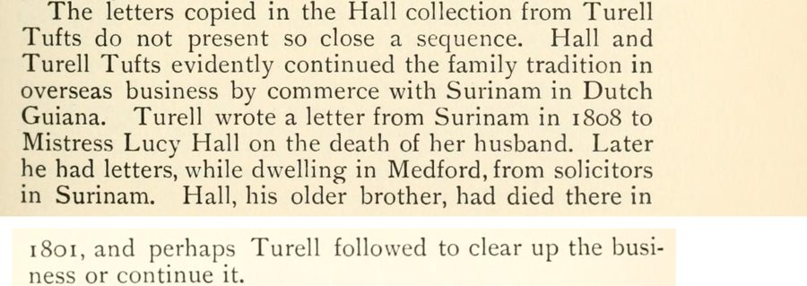

Biography
Hall Tufts was born in Medford in 1775, a son of Dr. Simon Tufts by his second wife, Elizabeth Hall, whom the doctor married on October 5, 1769. His first name was his mother’s family name. Brooks lists him among the doctor’s children and records that he died at Surinam on July 19, 1801.
by his second wife, Elizabeth Hall, whom the doctor married on October 5, 1769. His first name was his mother’s family name. Brooks lists him among the doctor’s children and records that he died at Surinam on July 19, 1801.
“87 Hall, „ 1775 ; d. at Surinam, July 19, 1801.”
Charles Brooks, History of the Town of Medford (1855), p. 546. Page scan (Internet Archive)
Brooks also names Hall Tufts among Medford’s graduates of Harvard College, in the class of 1794 (Brooks, p. 301). The family tomb gives him the degree “A. M.”

Like his half-brother Simon Tufts, the “Merchant of India”, Hall went abroad in trade. Ruth Dame Coolidge, working from the Hall family papers of the Medford Historical Society, found that he and his brother Turell Tufts carried on business with Surinam, the Dutch colony on the north coast of South America, and that Turell may have gone out there after Hall’s death to settle or continue the business:
“The letters copied in the Hall collection from Turell Tufts do not present so close a sequence. Hall and Turell Tufts evidently continued the family tradition in overseas business by commerce with Surinam in Dutch Guiana. Turell wrote a letter from Surinam in 1808 to Mistress Lucy Hall on the death of her husband. Later he had letters, while dwelling in Medford, from solicitors in Surinam. Hall, his older brother, had died there in 1801, and perhaps Turell followed to clear up the business or continue it.”
Ruth Dame Coolidge, “Simon Tufts the Third, Merchant of India,” Medford Historical Register XLI, no. 4 (December 1938), pp. 61–62. View the page scan
Turell Tufts was later named United States consul at Surinam (see his profile). Hall died there at twenty-six, and he is remembered on the family tomb in the Salem Street burying ground in Medford:

“Hall Tufts A. M. 4th son at Surinam, 19 July 1801 Aged 26 y’s.”
Ruth Dame Coolidge, “Simon Tufts the Third, Merchant of India,” Medford Historical Register XLI, no. 3 (September 1938), p. 33. View the page scan
The house he grew up in is shown on the page of his half-brother Simon and on Places: Homesteads.
Turell’s own letter from Surinam in 1808, his return to Medford, and the agent who later managed the business there are described on his profile.
Service Record
Town: Medford, Mass.; died at Surinam · Dates: 1775–19 July 1801
Born in 1775, he was a child during the Revolution. No military or civil service is recorded for him.
Family Connection
Father: Dr. Simon Tufts (1727–1786) . Mother: Elizabeth (Hall) Tufts, who died August 30, 1830, aged 87. Grandfather: Dr. Simon Tufts (1700–1747). Half-brother: Simon Tufts (1750–1801/2); half-sisters Lucy (Mrs. Benjamin Hall, Jr.) and Catharine. Full siblings, per Brooks: Turell (1770–1842), Cotton (1772–1835), Hepzibah (born 1777, married Benjamin Hall), and Stephen (born 1779) (Charles Brooks, History of the Town of Medford (1855), p. 546. Page scan (Internet Archive)).
. Mother: Elizabeth (Hall) Tufts, who died August 30, 1830, aged 87. Grandfather: Dr. Simon Tufts (1700–1747). Half-brother: Simon Tufts (1750–1801/2); half-sisters Lucy (Mrs. Benjamin Hall, Jr.) and Catharine. Full siblings, per Brooks: Turell (1770–1842), Cotton (1772–1835), Hepzibah (born 1777, married Benjamin Hall), and Stephen (born 1779) (Charles Brooks, History of the Town of Medford (1855), p. 546. Page scan (Internet Archive)).
Relatives with profiles on this site: father Dr. Simon Tufts (1727–1786) ; grandfather Dr. Simon Tufts (1700–1747); half-brother Simon Tufts (1750–1801/2); brother Turell Tufts (1770–1842).
; grandfather Dr. Simon Tufts (1700–1747); half-brother Simon Tufts (1750–1801/2); brother Turell Tufts (1770–1842).
Spouse(s)
No marriage is recorded for him by Brooks or Coolidge.
Authoritative IDs / Index Numbers
| Source | ID / status |
|---|---|
| Perseus person index (auth=) | Note: Pending further work. |
| Find a Grave memorial | Note: Pending further work. |
| Brooks, History of Medford (1855) register no. | Note: Pending further work. |
| Mass. Soldiers and Sailors | Not yet checked for this page |
| DAR ancestor no. | Note: Pending further work. |
| FamilySearch ID | Note: Pending further work. |
| Geni profile | Note: Pending further work. |
| WikiTree ID | Note: Pending further work. |
| Town / vital records | Medford VRs not yet checked by volume and page |
Only IDs confirmed against dates and family are given as matches. “Not yet checked” means the source has not been searched; “Checked, not found” means it was searched without a match.
⚑ Unverified
Birth order: Coolidge calls Hall Turell’s “older brother,” but Brooks gives Turell’s birth as 1770 and Hall’s as 1775, and the tomb calls Hall the fourth son, which fits Brooks. Brooks is followed here. Exact birth date and place of burial (at Surinam or brought home) are not recorded in these sources. Harvard degree: the class year 1794 is from Brooks’s list; it has not yet been checked against the Harvard Quinquennial Catalogue. Note: Pending further work.
Links and Resources
Every source, record, map, survey, marker and artifact tied to this person, gathered in one place. Page numbers are given where a book is cited.
Maps, Surveys and Artifacts
- — Clipping: Hall and Turell Tufts in the Surinam trade. Detail of pp. 61–62, Medford Historical Register XLI, no. 4 (December 1938), from Coolidge’s “Simon Tufts the Third, Merchant of India.” Image: Me
- — Clipping: inscription of the Tufts family tomb, Salem Street burying ground, Medford. Detail of p. 33, Medford Historical Register XLI, no. 3 (September 1938), from Coolidge’s “Simon Tufts the Third,

Markers, Plaques and Places
- Places: Homesteads — The house he grew up in is shown on the page of his half-brother Simon and on
Digitized Books and Journals
- Page scan (Internet Archive) — Charles Brooks, History of the Town of Medford (1855), p. 546.
- Source: Internet Archive (full page) — …XLI, no. 4 (December 1938), from Coolidge’s “Simon Tufts the Third, Merchant of India.”Image: Medford Historical Society, Medford Historical Register XLI (1938), via Internet Archive. Shown for non-commercial historical use.
- Source: Internet Archive (full page) — …XLI, no. 3 (September 1938), from Coolidge’s “Simon Tufts the Third, Merchant of India.”Image: Medford Historical Society, Medford Historical Register XLI (1938), via Internet Archive. Shown for non-commercial historical use.